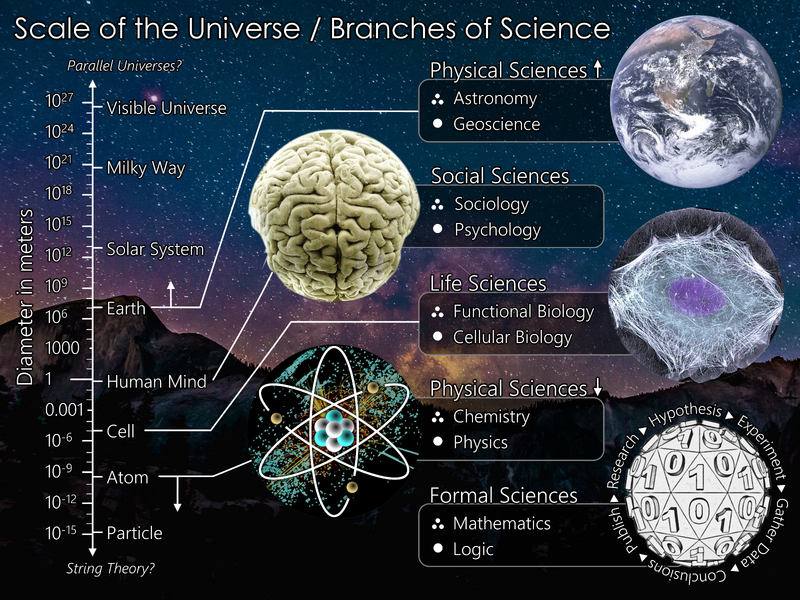

Scifo Scifo
Scifo Scifo 
The branches of science (also referred to as "sciences", "scientific fields", or "scientific disciplines") are commonly divided into three major groups:
Natural, social, and formal science make up the fundamental sciences, which form the basis of interdisciplinary and applied sciences such as engineering and medicine. Specialized scientific disciplines that exist in multiple categories may include parts of other scientific disciplines but often possess their own terminologies and expertises.
Natural science is a branch of science that seeks to elucidate the rules that govern the natural world by applying an empirical and scientific method to the study of the universe. The term natural sciences is used to distinguish it from the social sciences, which apply the scientific method to study human behavior and social patterns; the humanities, which use a critical, or analytical approach to the study of the human condition; and the formal sciences.
The social sciences are the fields of scholarship that study society. "Social science" is commonly used as an umbrella term to refer to a plurality of fields outside of the natural sciences. These include: anthropology, archaeology, business administration, communication, criminology, economics, education, government, linguistics, international relations, political science, psychology (especially social psychology), theology, sociology and, in some contexts, geography, history and law.
The formal sciences are the branches of science that are concerned with formal systems, such as logic, mathematics, theoretical computer science, information theory, systems theory, decision theory, statistics, and theoretical linguistics.
Unlike other sciences, the formal sciences are not concerned with the validity of theories based on observations in the real world (empirical knowledge), but rather with the properties of formal systems based on definitions and rules. Methods of the formal sciences are, however, essential to the construction and testing of scientific models dealing with observable reality, and major advances in formal sciences have often enabled major advances in the empirical sciences.